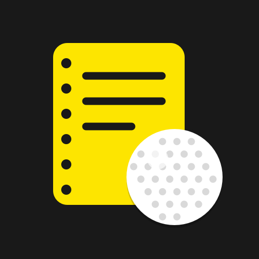

골프노트개인정보처리방침
시행일: 2026년 11월 14일
- 골프노트는 회원가입·로그인이 없고, 개발자가 운영하는 서버도 없습니다.
- 연습 영상, 사진, 음성 메모, 메모 글, 연습 기록은 사용자의 기기 안에만 저장되며 개발자에게 전송되지 않습니다.
- 음성 메모를 글로 바꾸는 기능은 기기 안에서만 처리되며, 녹음을 서버로 보내지 않습니다.
- 앱 안의 광고는 Google AdMob이 제공하며, 광고 제공을 위해 Google이 광고 식별자 등 기기 정보를 처리합니다.
골프노트(이하 “앱”)의 개발자(이하 “개발자”)는 「개인정보 보호법」 등 관련 법령을 지키며, 이용자의 개인정보를 다음과 같이 처리합니다.
1. 개발자가 수집하는 개인정보
개발자는 앱을 통해 이용자의 개인정보를 수집하거나 저장하지 않습니다. 앱에는 회원가입·로그인 기능이 없고, 앱이 만든 기록을 개발자의 서버로 보내는 기능도 없습니다.
이용자가 이메일로 문의하는 경우에 한해, 답변을 위해 이용자가 보낸 이메일 주소와 문의 내용을 받게 되며, 처리가 끝나면 지체 없이 삭제합니다(관련 법령에 보관 의무가 있는 경우 제외).
2. 기기 안에만 저장되는 정보
다음 정보는 이용자의 기기 안 앱 저장 공간에만 저장되며, 개발자는 이 정보에 접근할 수 없습니다.
| 정보 | 샷 영상(전후 몇 초 분량)과 썸네일, 샷 장면·비교 사진, 음성 메모 녹음과 이를 글로 바꾼 내용, 메모 글, 연습 날짜·장소 이름·클럽·샷 수 등 연습 기록 |
|---|---|
| 보관 기간 | 이용자가 앱에서 직접 지우거나 앱을 삭제할 때까지. 앱을 삭제하면 함께 삭제됩니다. |
| 참고 | 휴대폰의 백업 설정(iCloud, Google 백업 등)에 따라 일부 기록이 이용자 본인의 백업에 포함될 수 있습니다. 이 백업은 Apple·Google이 이용자 계정에 보관하며 개발자는 접근할 수 없습니다. 샷 영상 파일은 iOS에서 백업에서 제외되도록 설정되어 있습니다. |
이용자가 ‘사진첩에 저장’을 누른 영상·사진은 기기의 사진첩에 저장되며, 그 뒤의 관리는 기기와 사진 앱의 설정을 따릅니다.
3. 앱이 사용하는 권한
| 카메라 | 스윙 영상 촬영 |
|---|---|
| 마이크 | 음성 메모 녹음, 영상의 소리 녹음, 타구음 감지(샷 자동 저장) |
| 음성 인식 | 음성 메모를 글로 바꾸기(기기 안에서만 처리) |
| 사진첩(추가) | 이용자가 요청한 영상·사진을 사진첩에 저장 |
| 앱 추적(iOS) | 맞춤형 광고 제공 여부를 묻기 위함 |
권한은 해당 기능을 처음 쓸 때 묻습니다. 허용하지 않아도 그 권한이 필요한 기능을 제외한 나머지 기능은 쓸 수 있으며, 기기의 설정에서 언제든 바꿀 수 있습니다.
4. 광고(Google AdMob)
앱은 홈 화면 등에 Google AdMob 배너 광고를 보여 줍니다. 광고를 제공하고 광고 성과를 측정하며 부정 사용을 막기 위해, Google이 다음 정보를 처리할 수 있습니다. 이 정보는 Google이 직접 받으며 개발자는 개별 이용자를 식별할 수 있는 정보를 받지 않습니다.
- 광고 식별자(iOS IDFA — 이용자가 추적을 허용한 경우, Android 광고 ID)
- IP 주소, 기기 모델·운영체제·언어 등 기기 정보, 대략적인 위치(IP 기반)
- 광고 노출·클릭 등 광고와의 상호작용 정보
앱의 연습 영상, 사진, 음성, 메모, 연습 기록은 광고에 사용되지 않으며 Google에 전송되지 않습니다.
맞춤형 광고 거부 방법
- iOS: 앱이 묻는 ‘추적 허용’에서 ‘앱에 추적 금지 요청’을 선택하거나, 설정 › 개인정보 보호 및 보안 › 추적에서 끌 수 있습니다.
- Android: 설정 › 개인정보 보호(또는 Google) › 광고에서 광고 ID를 삭제하거나 재설정할 수 있습니다.
거부해도 앱의 모든 기능을 그대로 쓸 수 있으며, 맞춤형이 아닌 광고가 표시될 수 있습니다.
Google의 정보 처리에 관한 자세한 내용은 Google 파트너 사이트·앱의 데이터 사용과 Google 개인정보처리방침을 참고하세요.
5. 개인정보의 국외 이전
광고 제공 과정에서 위 4번의 정보가 Google에 전송되어 국외에서 처리될 수 있습니다.
| 이전받는 자 | Google LLC (문의: Google 개인정보 문의) |
|---|---|
| 이전 국가 | 미국 등 Google이 데이터 센터를 운영하는 국가 |
| 이전 항목 | 위 4번의 광고 관련 정보 |
| 이전 시기·방법 | 광고가 표시될 때 네트워크를 통해 전송 |
| 목적·보유 기간 | 광고 제공·측정·부정 사용 방지, Google의 정책에 따른 기간 |
| 거부 방법 | 위 4번의 맞춤형 광고 거부 방법. 광고 표시 자체를 원하지 않으면 앱 사용을 중단하거나 기기의 네트워크 연결을 끈 상태로 사용할 수 있습니다(앱의 기능은 인터넷 없이 동작합니다). |
6. 제3자 제공
개발자는 이용자의 개인정보를 제3자에게 제공하지 않습니다. 위 4·5번의 광고 관련 처리는 Google이 이용자의 기기에서 직접 받는 것입니다.
7. 아동의 개인정보
앱은 만 14세 미만 아동을 대상으로 하지 않으며, 아동의 개인정보를 알면서 수집하지 않습니다.
8. 이용자의 권리
앱의 모든 기록은 이용자 기기 안에 있으므로, 이용자는 앱에서 직접 기록을 보고 고치고 지울 수 있으며 앱을 삭제하면 모두 삭제됩니다. 개인정보와 관련한 문의·요청은 아래 연락처로 보내 주시면 지체 없이 답변하겠습니다.
9. 개인정보 보호책임자 및 문의
| 책임자 | 골프노트 개발자 |
|---|---|
| 이메일 | golfnotes.app274@gmail.com |
개인정보 침해에 대한 신고·상담은 개인정보침해신고센터(국번 없이 118, privacy.kisa.or.kr), 개인정보분쟁조정위원회(1833-6972, www.kopico.go.kr)에도 할 수 있습니다.
10. 방침의 변경
이 방침을 바꾸는 경우 이 페이지에 바뀐 내용과 시행일을 알립니다.